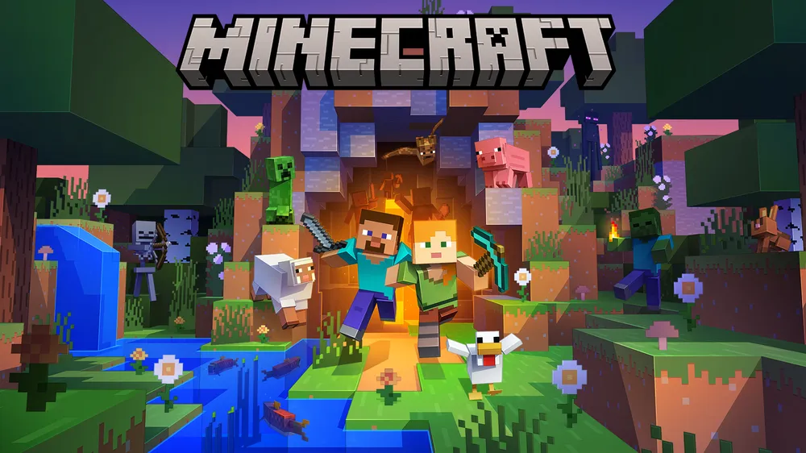

저는 어렸을 때부터 한 일에 집중해서 열심히 했던 적이 없습니다.
그러다가 중학교 2학년 때 마인크래프트라는 게임을 하면서 내가 더 만들고 싶다는 마음이 생겨
자바 이클립스를 접하게 되었고 열심히 인터넷에서 찾으면서 게임의 부과적인 기능을 더하는
플러그인이라는 것을 만들었습니다. 어렸을 때라 단지 사람들이 하는 것을 따라치는 정도 였습니다.
그 과정에서 무언가를 입력하고 내가 결과를 만든다 것 자체에 재미를 느끼기 시작하여
저는 처음으로 진로를 정하게 되었습니다. 저의 어린 시절에 가장 큰 사건은 이것이라고 생각합니다.
현재의 저는 그때보다 열정이 있는 것은 아니지만 아직도 코딩을 하면서 무언가를 만들면 재미를 느낍니다.
저는 여러 프로그래밍해보면서 자바를 맘에 들어했고 단지 인터넷에서 받아 적던 어린아이가 아닌
저는 자바를 주력으로 하는 벡앤드 프로그래머를 목표로 공부하는 학생이 되었습니다!